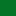

<!doctype html>
<html lang="en">
    <head>
        <meta charset="utf-8">
        <meta http-equiv="X-UA-Compatible" content="IE=edge">
        <meta name="viewport" content="initial-scale=1,user-scalable=no,maximum-scale=1,width=device-width">
        <meta name="mobile-web-app-capable" content="yes">
        <meta name="apple-mobile-web-app-capable" content="yes">
        <link rel="stylesheet" href="css/leaflet.css">
        <link rel="stylesheet" href="css/qgis2web.css"><link rel="stylesheet" href="css/fontawesome-all.min.css">
        <style>
        html, body, #map {
            width: 100%;
            height: 100%;
            padding: 0;
            margin: 0;
        }
        </style>
        <title>Landcover classification of Salina</title>
    </head>
    <body>
        <div id="map">
        </div>
        <script src="js/qgis2web_expressions.js"></script>
        <script src="js/leaflet.js"></script>
        <script src="js/leaflet.rotatedMarker.js"></script>
        <script src="js/leaflet.pattern.js"></script>
        <script src="js/leaflet-hash.js"></script>
        <script src="js/Autolinker.min.js"></script>
        <script src="js/rbush.min.js"></script>
        <script src="js/labelgun.min.js"></script>
        <script src="js/labels.js"></script>
        <script src="data/Landcover_1.js"></script>
        <script src="data/Salina_2.js"></script>
        <script>
        var map = L.map('map', {
            zoomControl:true, maxZoom:28, minZoom:1
        })
        var hash = new L.Hash(map);
        map.attributionControl.setPrefix('<a href="https://github.com/tomchadwin/qgis2web" target="_blank">qgis2web</a> &middot; <a href="https://leafletjs.com" title="A JS library for interactive maps">Leaflet</a> &middot; <a href="https://qgis.org">QGIS</a> &middot; <a href="https://www.openstreetmap.org/">Open Street Map</a>');
        var autolinker = new Autolinker({truncate: {length: 30, location: 'smart'}});
        var bounds_group = new L.featureGroup([]);
        function setBounds() {
            if (bounds_group.getLayers().length) {
                map.fitBounds(bounds_group.getBounds());
            }
        }
        map.createPane('pane_OpenStreetMap_0');
        map.getPane('pane_OpenStreetMap_0').style.zIndex = 400;
        var layer_OpenStreetMap_0 = L.tileLayer('https://tile.openstreetmap.org/{z}/{x}/{y}.png', {
            pane: 'pane_OpenStreetMap_0',
            opacity: 1.0,
            attribution: '',
            minZoom: 1,
            maxZoom: 28,
            minNativeZoom: 0,
            maxNativeZoom: 19
        });
        layer_OpenStreetMap_0;
        map.addLayer(layer_OpenStreetMap_0);
        function pop_Landcover_1(feature, layer) {
            var popupContent = '<table>\
                    <tr>\
                        <td colspan="2">' + (feature.properties['Classification'] !== null ? autolinker.link(feature.properties['Classification'].toLocaleString()) : '') + '</td>\
                    </tr>\
                </table>';
            layer.bindPopup(popupContent, {maxHeight: 400});
        }

        function style_Landcover_1_0(feature) {
            switch(String(feature.properties['Classification'])) {
                case 'WATER BODY':
                    return {
                pane: 'pane_Landcover_1',
                stroke: false, 
                fill: true,
                fillOpacity: 1,
                fillColor: 'rgba(47,225,241,1.0)',
                interactive: true,
            }
                    break;
                case 'BARE EARTH':
                    return {
                pane: 'pane_Landcover_1',
                stroke: false, 
                fill: true,
                fillOpacity: 1,
                fillColor: 'rgba(131,103,66,1.0)',
                interactive: true,
            }
                    break;
                case 'CLIFFS':
                    return {
                pane: 'pane_Landcover_1',
                stroke: false, 
                fill: true,
                fillOpacity: 1,
                fillColor: 'rgba(71,55,35,1.0)',
                interactive: true,
            }
                    break;
                case 'GRASS COVER':
                    return {
                pane: 'pane_Landcover_1',
                stroke: false, 
                fill: true,
                fillOpacity: 1,
                fillColor: 'rgba(255,255,191,1.0)',
                interactive: true,
            }
                    break;
                case 'LIGHT TREE COVER':
                    return {
                pane: 'pane_Landcover_1',
                stroke: false, 
                fill: true,
                fillOpacity: 1,
                fillColor: 'rgba(10,186,119,1.0)',
                interactive: true,
            }
                    break;
                case 'DENSE TREE COVER':
                    return {
                pane: 'pane_Landcover_1',
                stroke: false, 
                fill: true,
                fillOpacity: 1,
                fillColor: 'rgba(4,116,38,1.0)',
                interactive: true,
            }
                    break;
                case 'BUILT UP':
                    return {
                pane: 'pane_Landcover_1',
                stroke: false, 
                fill: true,
                fillOpacity: 1,
                fillColor: 'rgba(11,11,11,1.0)',
                interactive: true,
            }
                    break;
            }
        }
        map.createPane('pane_Landcover_1');
        map.getPane('pane_Landcover_1').style.zIndex = 401;
        map.getPane('pane_Landcover_1').style['mix-blend-mode'] = 'normal';
        var layer_Landcover_1 = new L.geoJson(json_Landcover_1, {
            attribution: '',
            interactive: true,
            dataVar: 'json_Landcover_1',
            layerName: 'layer_Landcover_1',
            pane: 'pane_Landcover_1',
            onEachFeature: pop_Landcover_1,
            style: style_Landcover_1_0,
        });
        bounds_group.addLayer(layer_Landcover_1);
        map.addLayer(layer_Landcover_1);
        function pop_Salina_2(feature, layer) {
        }

        function style_Salina_2_0() {
            return {
                pane: 'pane_Salina_2',
                opacity: 1,
                color: 'rgba(228,26,28,1.0)',
                dashArray: '',
                lineCap: 'square',
                lineJoin: 'bevel',
                weight: 2.0,
                fillOpacity: 0,
                interactive: true,
            }
        }
        map.createPane('pane_Salina_2');
        map.getPane('pane_Salina_2').style.zIndex = 402;
        map.getPane('pane_Salina_2').style['mix-blend-mode'] = 'normal';
        var layer_Salina_2 = new L.geoJson(json_Salina_2, {
            attribution: '',
            interactive: true,
            dataVar: 'json_Salina_2',
            layerName: 'layer_Salina_2',
            pane: 'pane_Salina_2',
            onEachFeature: pop_Salina_2,
            style: style_Salina_2_0,
        });
        bounds_group.addLayer(layer_Salina_2);
        map.addLayer(layer_Salina_2);
            var title = new L.Control();
            title.onAdd = function (map) {
                this._div = L.DomUtil.create('div', 'info');
                this.update();
                return this._div;
            };
            title.update = function () {
                this._div.innerHTML = '<h2>Landcover classification of Salina</h2>';
            };
            title.addTo(map);
            var abstract = new L.Control({'position':'bottomleft'});
            abstract.onAdd = function (map) {
                this._div = L.DomUtil.create('div',
                'leaflet-control abstract');
                this._div.id = 'abstract'
                    this._div.setAttribute("onmouseenter", "abstract.show()");
                    this._div.setAttribute("onmouseleave", "abstract.hide()");
                    this.hide();
                    return this._div;
                };
                abstract.hide = function () {
                    this._div.classList.remove("abstractUncollapsed");
                    this._div.classList.add("abstract");
                    this._div.innerHTML = 'i'
                }
                abstract.show = function () {
                    this._div.classList.remove("abstract");
                    this._div.classList.add("abstractUncollapsed");
                    this._div.innerHTML = 'Sentinel 2A multispectral imagery was utilised to calculate the NDVI and NDBI indices for the island. The polygonised rasters were clustered by a KMeans algorithm to produce the classification for the geomorphological areas, types of vegetation and built up areas.';
            };
            abstract.addTo(map);
        var baseMaps = {};
        L.control.layers(baseMaps,{' Salina': layer_Salina_2,'Landcover<br /><table><tr><td style="text-align: center;"></td><td>WATER BODY</td></tr><tr><td style="text-align: center;"></td><td>BARE EARTH</td></tr><tr><td style="text-align: center;"></td><td>CLIFFS</td></tr><tr><td style="text-align: center;"></td><td>GRASS COVER</td></tr><tr><td style="text-align: center;"></td><td>LIGHT TREE COVER</td></tr><tr><td style="text-align: center;"></td><td>DENSE TREE COVER</td></tr><tr><td style="text-align: center;"></td><td>BUILT UP</td></tr></table>': layer_Landcover_1,"OpenStreetMap": layer_OpenStreetMap_0,}).addTo(map);
        setBounds();
        </script>
    </body>
</html>
